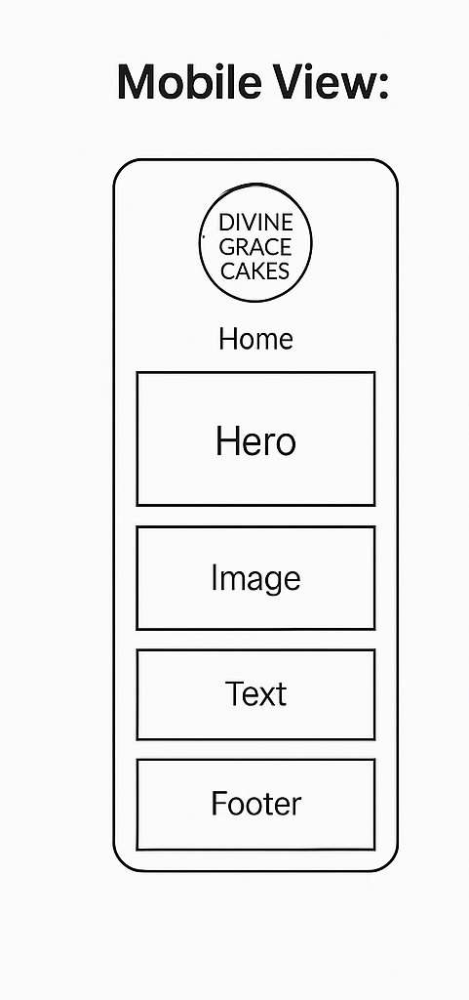
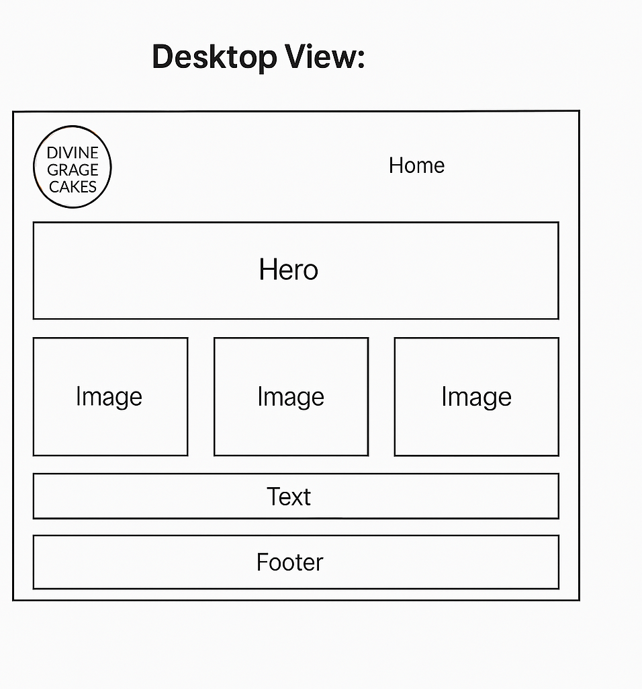

Site Name
Divine Grace Cakes is the chosen name for this website. The name reflects the spiritual inspiration and delicate touch that goes into every baked good. It’s elegant, memorable, and clearly associated with cakes and quality baking. It also fits well with a branding strategy that leans into premium, handcrafted products. Optional domain: divinegracecakes.com
Site Purpose
The website will serve as an online hub for showcasing baking creations, sharing recipes and stories, and accepting custom orders. Customers can browse a gallery of cakes, read about the baker’s journey, place personalized orders, and connect through contact forms or social media links. It’s both a portfolio and a business gateway.
Scenarios
- Can I order a birthday cake for delivery in my city?
- What kind of cakes does Divine Grace Cakes specialize in?
- How do I contact Divine Grace Cakes for bulk or event orders?
Color Scheme
- #F8BBD0 - Soft pink: used for headings and accents to give a warm, inviting feel.
- #5D4037 - Chocolate brown: used for text and footer to reflect rich, baked goodness.
Typography
- 'Playfair Display' – used for headings to give an elegant, classic look.
- 'Open Sans' – used for body text for readability and modern feel.
Wireframe
Mobile View:
Desktop View:
Testing & Validation
I will validate the HTML and CSS using W3C Validator tools, ensure accessibility with semantic tags and color contrast checks, and optimize for SEO and performance using browser dev tools and Lighthouse. All headings and images will use proper structure and alt attributes to improve screen reader compatibility.